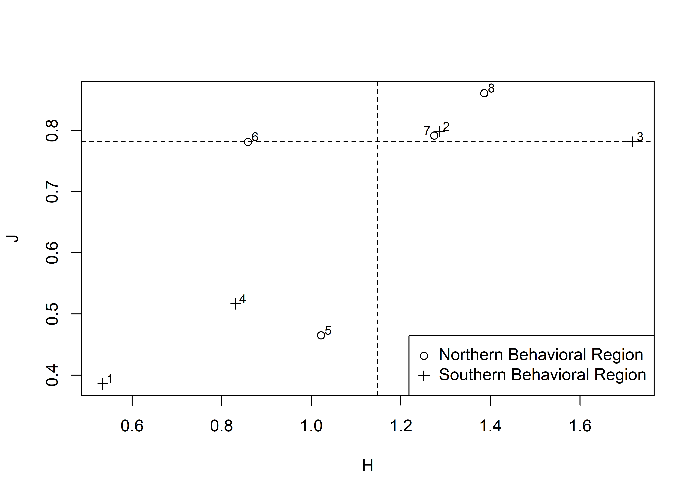
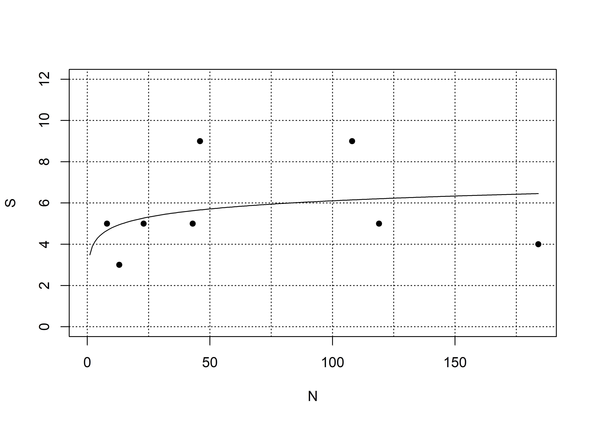
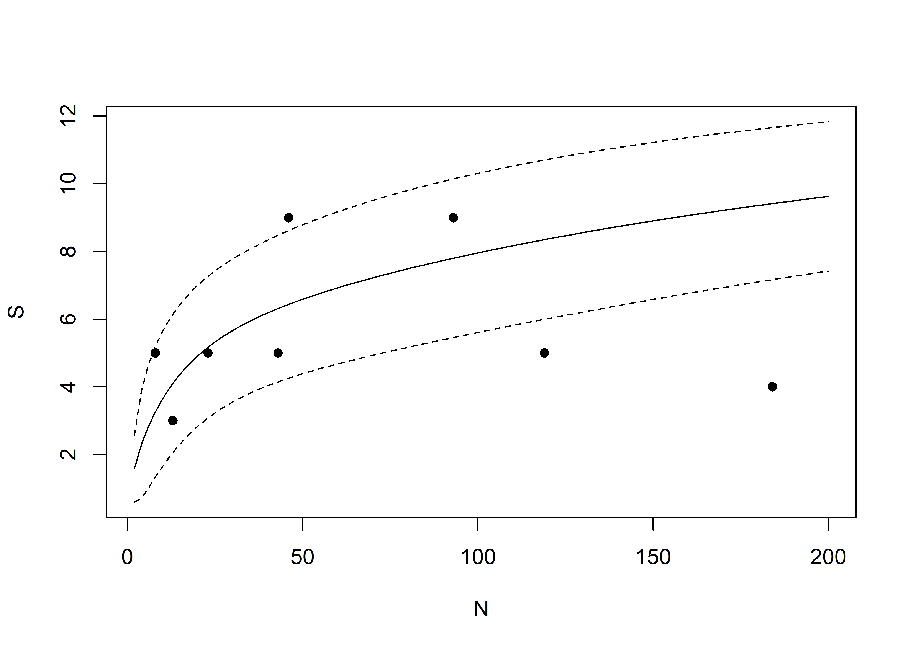

Chapter 3 Assemblage Diversity
This analysis of assemblage diversity is limited to Caddo mortuary contexts at the George C. Davis, Gahagan Mound, and Mounds Plantation sites where Gahagan bifaces were recovered.
data <- read.csv("gahagan-diagnostics.csv")
library(vegan)## Loading required package: permute## Loading required package: lattice## This is vegan 2.5-7# assemblage size (N)
N <- rowSums(data[3:14])
N ## assemblage sizes range from 8 - 184## [1] 184 23 93 119 46 13 43 8# how many of each type were found?
T <- colSums(data[3:14])
T ## quantity of each type (T) found across contexts## alba celt catahoula coles_creek
## 330 31 6 1
## friley gahagan hayes hickory_engraved
## 2 71 26 3
## holly_fine_engraved harrell kiam_incised scallorn
## 6 2 1 50# data by percentage
data.pct <- data[3:14]/N*100
# mean percent (Mp) of each type across assemblage
Mp <- colMeans(data.pct)
Mp## alba celt catahoula coles_creek
## 40.8593385 4.7783682 6.7934783 0.2717391
## friley gahagan hayes hickory_engraved
## 0.5624368 21.4428057 8.9643322 1.9686477
## holly_fine_engraved harrell kiam_incised scallorn
## 3.1606463 0.2688172 0.1344086 10.7949814#diversity, richness
# richness (S) = number of types in assemblage
S <- specnumber(data[3:14])
S## [1] 4 5 9 5 9 3 5 5# ubiquity (U) = number of assemblages that contain a particular type
U <- specnumber(data[3:14])
U## [1] 4 5 9 5 9 3 5 5## percentage of sites that have each type
Up <- U/length(N)*100
Up## [1] 50.0 62.5 112.5 62.5 112.5 37.5 62.5 62.5# Shannon diversity
H <- diversity(data[3:14])
## high diversity = more types and spread more evenly over types
H## [1] 0.5344039 1.2855725 1.7183200 0.8313750 1.0216998 0.8587409 1.2745830
## [8] 1.3862944# Simpson index
D1 <- diversity(data[3:14],
index = "simpson")
## probability that two artifacts drawn randomly represent different types
D1## [1] 0.2614012 0.6540643 0.7866805 0.4155074 0.4120983 0.5207101 0.6803678
## [8] 0.6875000# inverse Simpson index
D2 <- diversity(data[3:14],
index = "invsimpson")
## effective number of types
D2## [1] 1.353915 2.890710 4.687805 1.710886 1.700965 2.086420 3.128596 3.200000# effective number of types for Shannon diversity index
Hmax <- exp(H)
Hmax## [1] 1.706431 3.616738 5.575154 2.296474 2.777913 2.360187 3.577209 4.000000# evenness
# Pielou's J
J <- H/log(S)
## Shannon diversity index divided by natural log of richness
J## [1] 0.3854909 0.7987711 0.7820411 0.5165623 0.4649956 0.7816597 0.7919429
## [8] 0.8613531# ratio of effective species to richness
E <- Hmax/S
E## [1] 0.4266077 0.7233476 0.6194616 0.4592948 0.3086570 0.7867290 0.7154419
## [8] 0.8000000# summarize assemblage diversity to identify high & low diversity assemblages
library(maptools)## Loading required package: sp## Checking rgeos availability: TRUE
## Please note that 'maptools' will be retired by the end of 2023,
## plan transition at your earliest convenience;
## some functionality will be moved to 'sp'.pch <- c(1, 3)[as.factor(data$region)]
plot(H, J,
pch = pch)
abline(h = median(J),
v = median(H),
lty = 2)
pointLabel(H, J,
rownames(data),
cex = .75)
leg.txt <- c(as.expression(bquote("Northern Behavioral Region")),
as.expression(bquote("Southern Behavioral Region")))
legend("bottomright",
leg.txt,
pch = c(1, 3))
# sample size and richness
plot(S~N,
ylim = c(0,12),
xlim = c(0, 184),
pch = 16)
abline(h = seq(0, 12, by = 2),
v = seq(0, 184, by = 25),
col = "black",
lty = 3)
data.log <- lm(S~log(N))
summary(data.log)##
## Call:
## lm(formula = S ~ log(N))
##
## Residuals:
## Min 1Q Median 3Q Max
## -2.4022 -1.3819 -0.4732 0.9242 3.3268
##
## Coefficients:
## Estimate Std. Error t value Pr(>|t|)
## (Intercept) 3.6598 3.0668 1.193 0.278
## log(N) 0.5259 0.7915 0.664 0.531
##
## Residual standard error: 2.293 on 6 degrees of freedom
## Multiple R-squared: 0.06854, Adjusted R-squared: -0.08671
## F-statistic: 0.4415 on 1 and 6 DF, p-value: 0.5311deviance(data.log)## [1] 31.55331xval <- seq(1, 184, by = 1)
lines(xval,
predict(data.log,
data.frame(N = xval)),
lty= 1)
# rarefaction curve
xval <- seq(2, 200, by = 2)
data.rar <- rarefy(T, xval, se = TRUE)
Est <- data.rar[1, ]
Sd <- data.rar[2, ]
rare <- cbind(lower = Est-2*Sd,
expected = Est,
upper = Est+2*Sd)
plot(S~N,
ylim = range(rare),
xlim = range(xval),
pch = 16)
matlines(xval, rare,
type = "l",
lty = c(2, 1, 2),
col = "black")